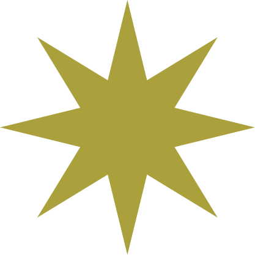
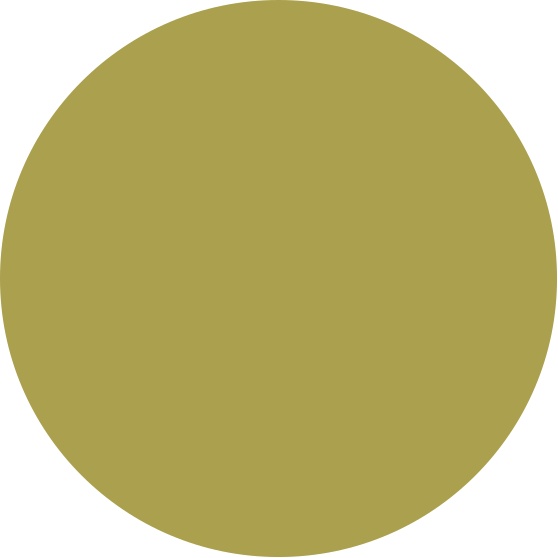
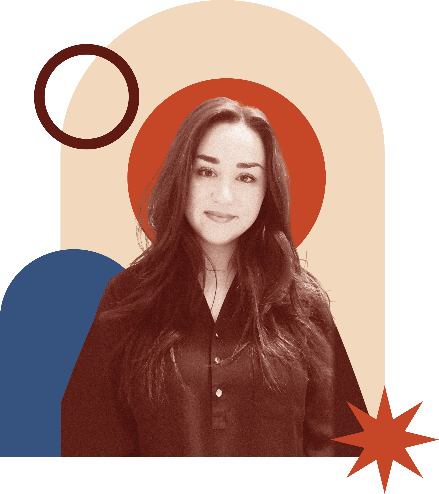

Il tuo brand
merita di essere
riconosciuto
al primo sguardo
Creo loghi, identità visive e brand manual che ti fanno riconoscere ovunque. In Lunigiana, a Massa Carrara e da remoto.

Cosa faccio
- Brand identity
- Restyling e rebranding
- Grafica per la stampa
- Siti vetrina

Tra due attività che offrono la stessa cosa, vai da quella che ti ispira di più.
Se si somigliano, scegli a caso.
Ed è proprio il limite dei loghi fatti con l'IA: si somigliano tutti.
Il tuo cliente decide in pochi secondi e premia chi si distingue.
Io progetto quei pochi secondi.
Poi la tua immagine passa nelle tue mani, con tutte le istruzioni per usarla.

Dai un'occhiata
ai miei progetti
Vedi tutti i progetti


Più di un bel logo
Quello che conta è come userai la tua immagine domani: con la tipografia, sui social, sull'insegna.
-
Impari a usare la tua immagine in autonomia
Ricevi il brand manual, una call in cui ti spiego tutto e, se vuoi, i template Canva già pronti. Non dovrai chiamarmi per ogni volantino.
-

Rispetto quello che hai già costruito
Se rinnovi la tua immagine, parto da ciò che i tuoi clienti riconoscono e lo porto con te nel nuovo.
-
So cosa succede dopo lo schermo
Ho imparato il mestiere seguendo i progetti fino alla stampa, anche in grande formato. I file che ti consegno funzionano davvero, dalla tipografia all'insegnista.



Ciao, sono Laura
Sono una graphic designer di Aulla, in Lunigiana. Lavoro con attività e imprese che stanno aprendo, che vogliono rinfrescare la propria immagine o che sentono di doverla cambiare del tutto, dalla stampa ai social.
So cosa vuol dire non sapere come raccontarsi: ci sono passata anch'io, prima di trovare la mia strada. Per questo il mio lavoro è trasformare le tue idee, anche quelle più confuse, in un'identità chiara e riconoscibile, e lasciarti gli strumenti per usarla.
Scopri chi sonoCome
lavoreremo
insieme
Un percorso chiaro, un passaggio alla volta. Si va avanti quando approvi il passaggio precedente: così ogni scelta è condivisa, e i tempi dipendono anche da quanto rapidamente mi rispondi.
Come si paga
In tre momenti: 40% alla firma, 30% quando approvi la direzione, 30% alla consegna. Sono in regime forfettario: in fattura non c'è IVA.
-
Chiamata conoscitiva
Una chiacchierata senza impegno per conoscerci e capire il tuo progetto. Se siamo la coppia giusta, ti mando una proposta chiara, con tempi, costi e tutto quello che è incluso.
-
Analisi e moodboard
Prima di disegnare, studio. L'analisi comprende:
- La tua attività: cosa fai, come lo fai e cosa ti rende diverso
- I tuoi clienti: chi sono, cosa cercano e cosa li convince a scegliere
- Il posizionamento: il posto che vuoi occupare rispetto agli altri, per esempio più accessibile o più ricercato
- I concorrenti: come comunicano, cosa funziona e dove c'è spazio per distinguerti
Poi traduco tutto in immagini: ti presento l'analisi e due o tre moodboard, ognuna con un'atmosfera diversa. Sei tu a sapere quale racconta meglio la tua attività ai tuoi clienti.
Si parte quando ne scegli una -
Il logo
Disegno il logo a partire dalla moodboard scelta e te lo presento, spiegandoti il perché di ogni scelta. Poi lo rifiniamo insieme: è la base di tutto il resto, per questo lo definiamo prima di andare avanti.
Si prosegue quando approvi il logo -
Elementi coordinati
Sul logo approvato costruisco il resto dell'identità: colori, caratteri, pattern e le applicazioni previste dal tuo pacchetto, come il biglietto da visita. Le rivediamo insieme e le rifiniamo.
In tutto sono inclusi due giri di revisione, da usare sul logo e sugli elementi coordinati. Se servono altre modifiche, le concordiamo prima, con un costo chiaro.
Si prosegue quando approvi la versione finale -
Consegna e Call Finale
Ricevi tutti i file pronti per la stampa e per il web, insieme al brand manual: la guida da consultare quando vuoi e da passare a chi lavora con te. Poi ci sentiamo per una call in cui ti spiego come usare tutto. Logo e file sono tuoi.
Facciamoci
una chiacchierata
Se hai letto fin qui, qualcosa ha fatto click: è un buon segnale. Il punto di partenza è una chiamata conoscitiva, una conversazione tranquilla in cui mi racconti il tuo progetto e capiamo se è il caso di lavorare insieme. Nessun impegno, nessuna pressione.
Compila il modulo e ti rispondo entro due giorni lavorativi per fissare giorno e ora.
Domande
frequenti
Le cose che i clienti mi chiedono più spesso prima di iniziare.
Quanto costa un progetto?
Dipende da dove parti: costruire un'identità da zero, rinfrescare quella che hai o cambiarla del tutto. Trovi prezzi e contenuti di ogni pacchetto nella pagina Pacchetti. Il prezzo esatto, con eventuali aggiunte, è nella proposta che ricevi prima della firma.
Ti serve solo un menù, un'insegna o una brochure? Si possono fare anche singolarmente, su preventivo.
Quanto tempo ci vuole?
Una Rinfrescata richiede 2-3 settimane, Da Zero e Cambio Look 4-5. I tempi dipendono anche da quanto rapidamente mi dai un riscontro a ogni passaggio. Hai una scadenza vicina, come un'apertura o un evento? Dimmelo nella chiamata conoscitiva.
Il logo poi è mio?
Sì. Alla consegna ricevi tutti i file, e la cessione dei diritti è scritta nel contratto.
E se dopo due giri di revisione qualcosa non mi convince?
Le modifiche in più le concordiamo prima, con un costo chiaro, così non ci sono sorprese.
Cos'è il brand manual?
È la guida del tuo brand: spiega come usare logo, colori e caratteri. Puoi consultarlo quando vuoi e passarlo a chi lavora con te, dalla tipografia a chi cura i tuoi social o il tuo sito.
Lavori solo in Lunigiana?
No. Lavoro in Lunigiana e in provincia di Massa Carrara, e da remoto in tutta Italia, con chiamate e file condivisi online.
Lavori anche con aziende più grandi?
Sì. Se il progetto è più ampio, per esempio con più sedi, più linee di prodotto o un'immagine da applicare a tanti materiali, preparo una proposta su misura, partendo dagli stessi passaggi.